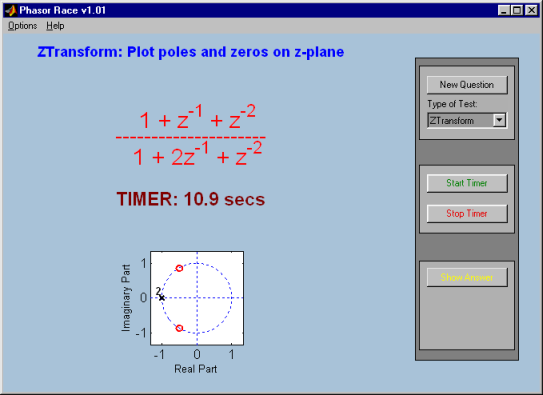

|  |
PhasorRaces is a program that helps master
the basic understanding of complex numbers, their Polar/Rectangular forms and
transfer functions. It enhances the ability to quickly carry out fundamental
mathematical operations on them, by providing response times for answering the
questions.
Features:
- A variety of quizzes from two difficulty levels are generated for the
user to calculate the answers.
- Provides different 'types' of tests depending on user choice. This could
be Adding complex numbers, conversion to/from Polar from/to rectangular form,
Pole-zero locations, sampling rate related operations or any one of these
choices picked at random.
- The time taken by the user to answer a particular question is timed using
the TIMER.
- The answer to the quiz is hidden until the student wishes to reveal it by
pushing the Show Answer button.
|